DIY Projects Using Recycled Materials
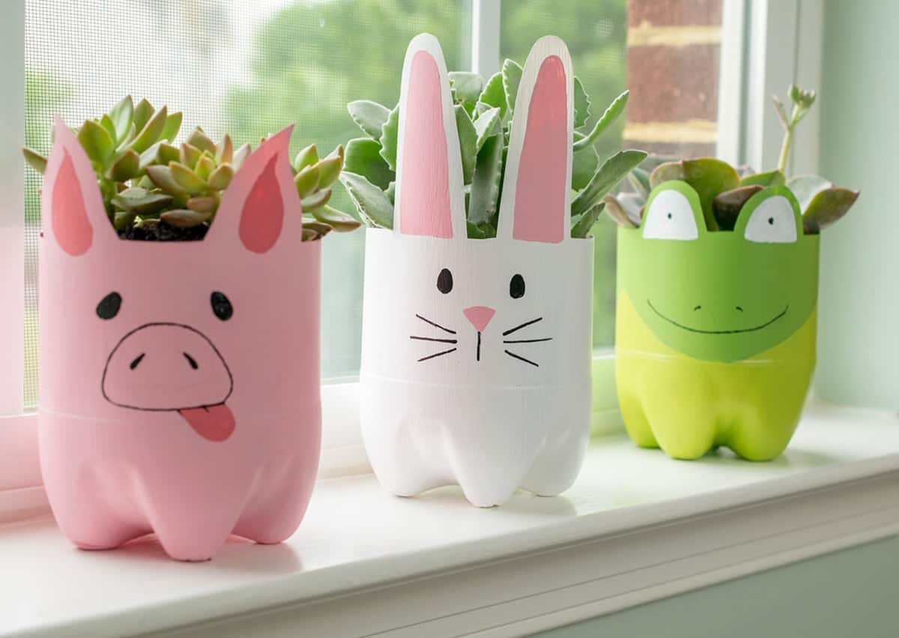
Plastic Bottle Planter
Transform used plastic bottles into creative planters for your home or garden. Add some soil and your favorite plants!
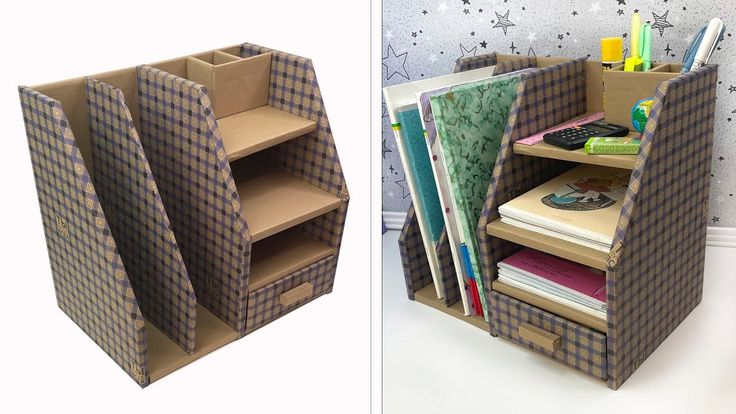
Cardboard Desk Organizer
Reuse cardboard boxes to create an organizer for your desk. Perfect for holding pens, notes, and small items.
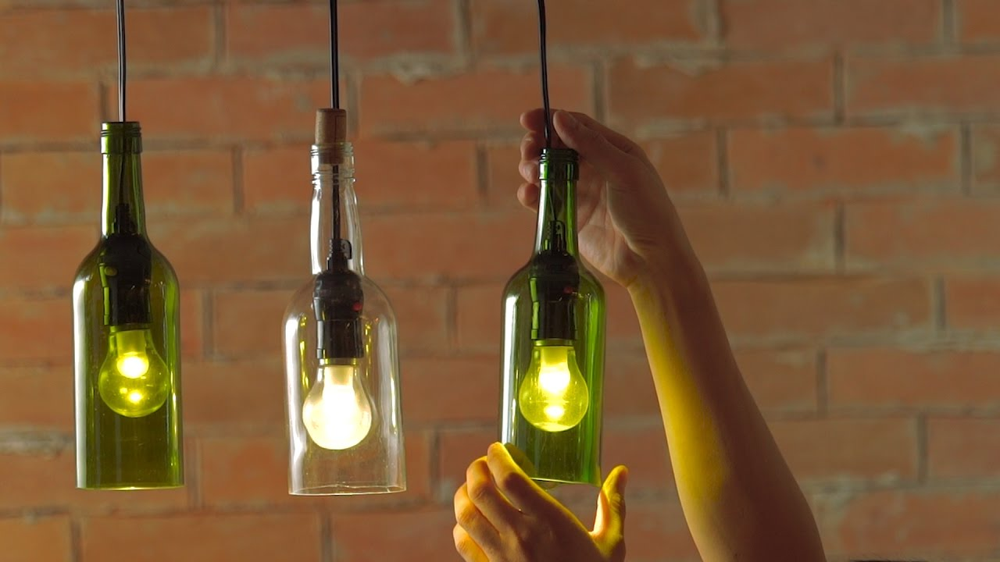
Glass Jar Lights
Upcycle glass jars into charming lights or candle holders. Add string lights or candles for a warm glow.
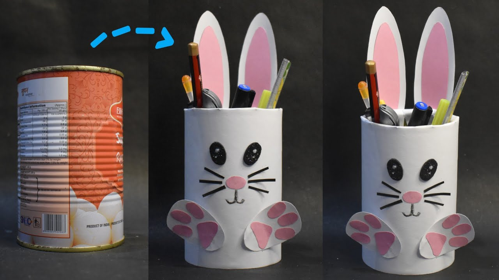
Tin Can Holders
Decorate tin cans to create storage holders for your kitchen, workspace, or kids' room. Get creative with paint and fabric!
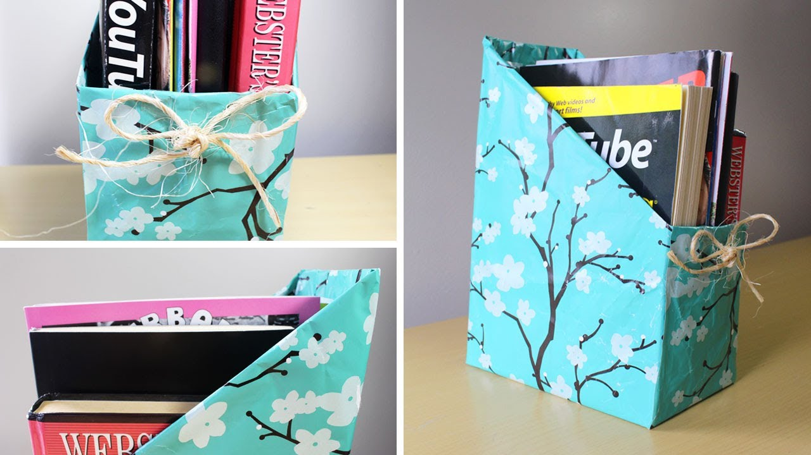
Magazine Basket
Weave old magazines into baskets for storing fruits, toys, or other household items. A fun and functional DIY!
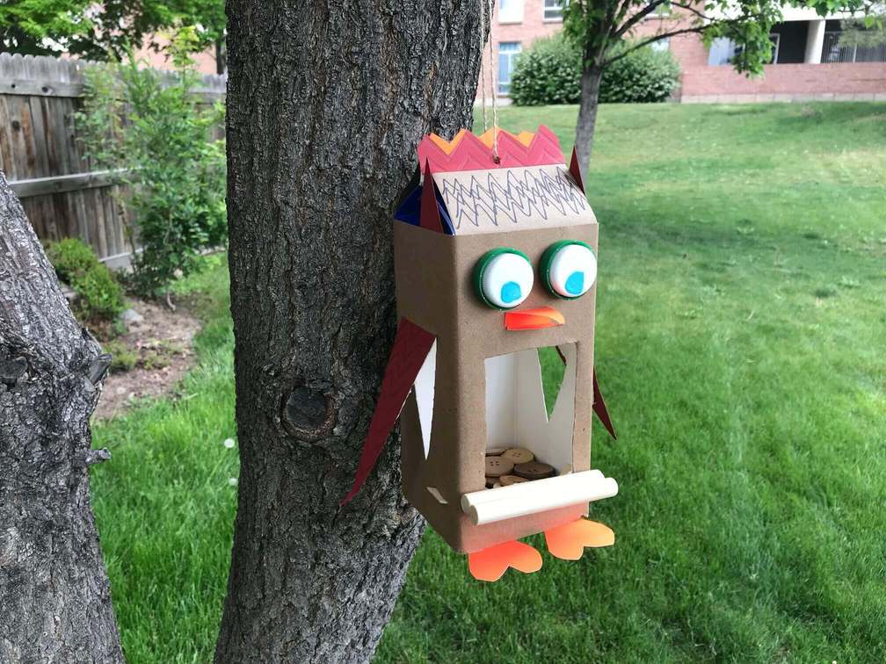
Milk Carton Bird Feeder
Turn empty milk cartons into colorful bird feeders. Cut out a hole, add some birdseed, and hang it outdoors.
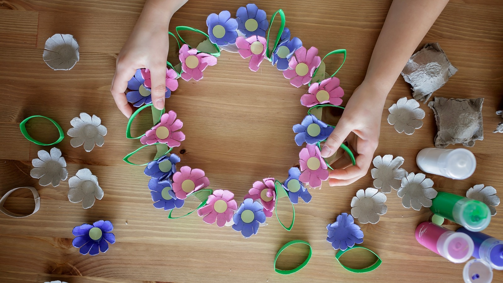
Egg Carton Flower Decor
Cut and paint egg cartons to create decorative flowers. Use them for home decorations or gift wrapping.
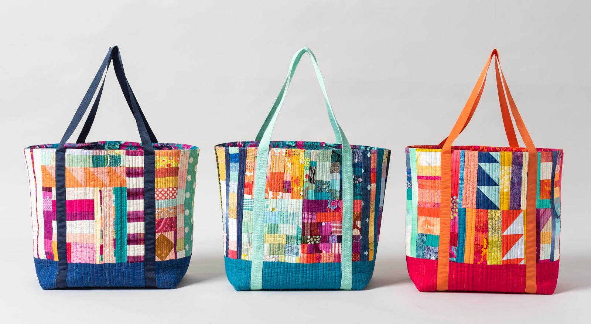
Fabric Scrap Tote Bag
Sew fabric scraps together to create reusable tote bags. Perfect for grocery shopping or as casual carry bags.
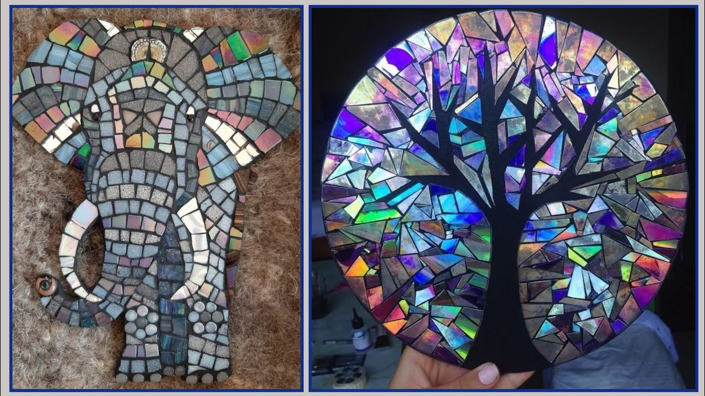
CD Mosaic Art
Break old CDs into small pieces and use them to create mosaics on picture frames, tables, or mirrors.
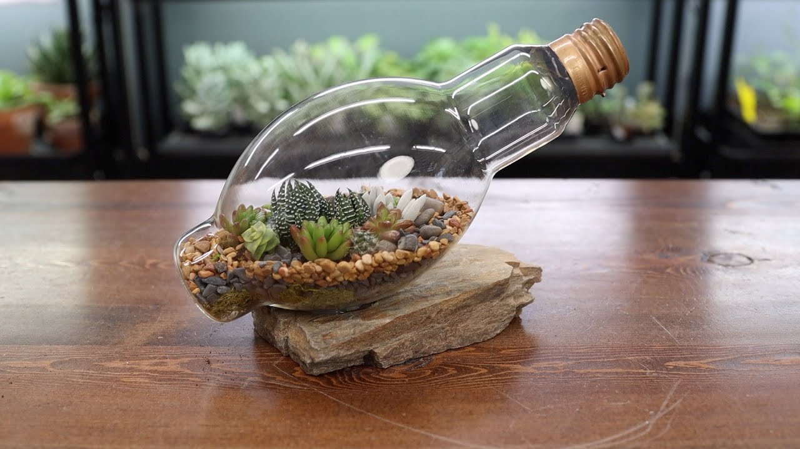
Light Bulb Terrarium
Hollow out old light bulbs and use them as mini terrariums. Add tiny plants or succulents for a modern look.
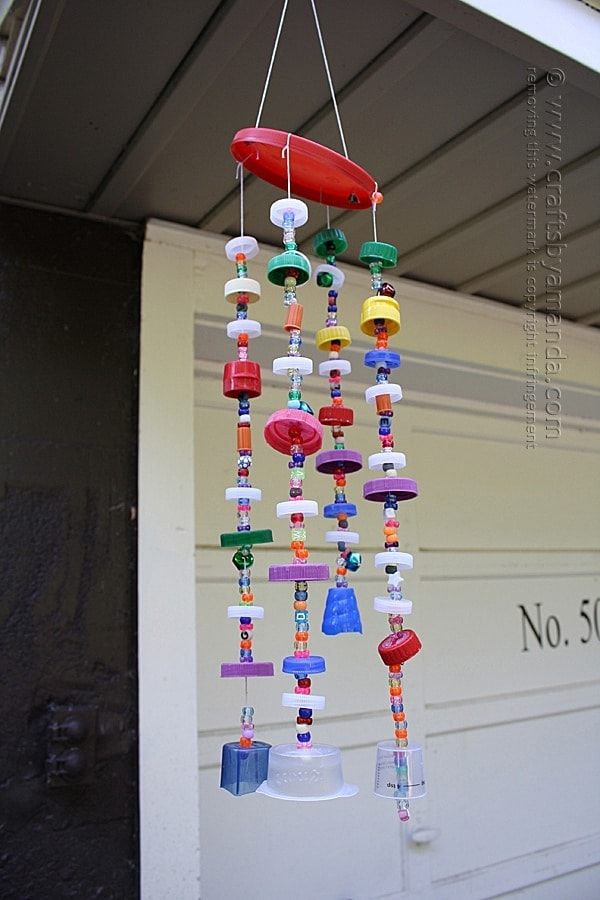
Plastic Lid Wind Chimes
Use colorful plastic lids and strings to make wind chimes. Add beads for an extra touch.
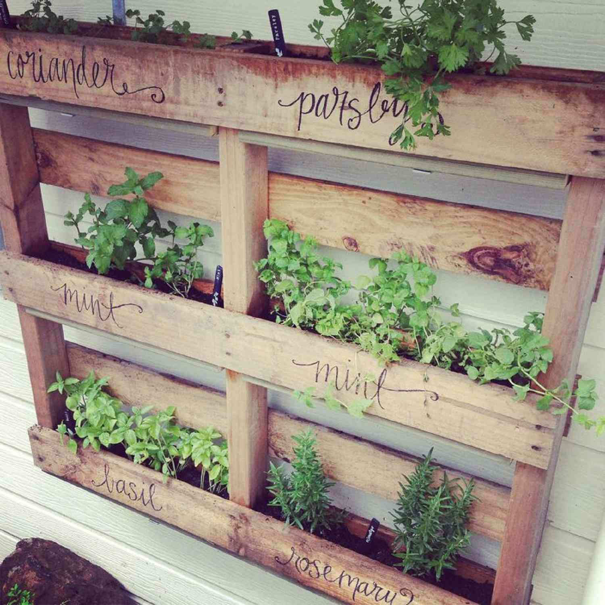
Pallet Furniture
Repurpose wooden pallets into small furniture items like coffee tables, chairs, or shelves.
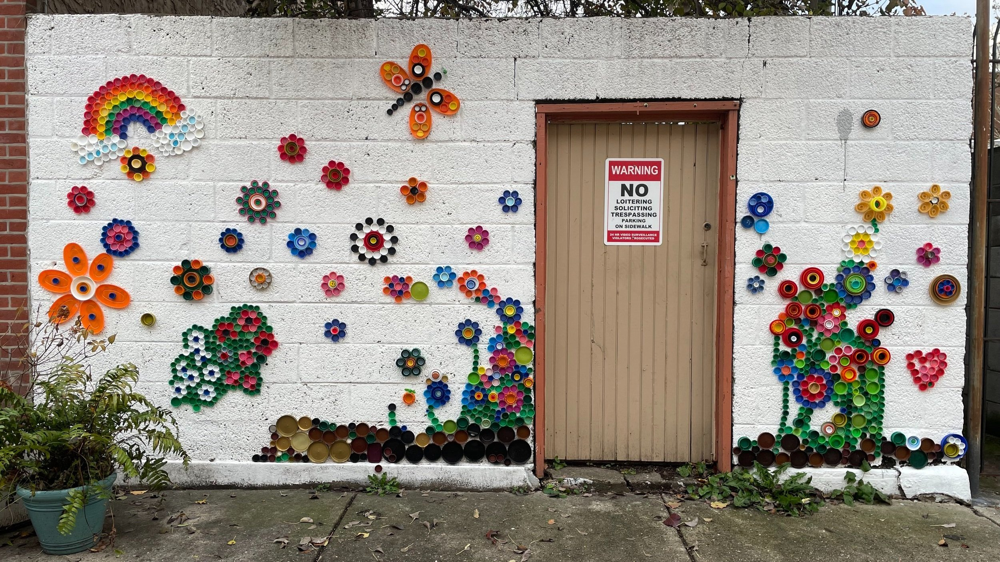
Bottle Cap Wall Art
Arrange and glue bottle caps into creative patterns for wall art or table decorations.
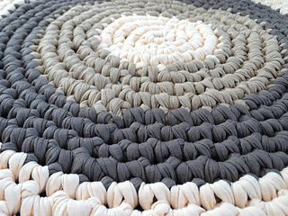
T-Shirt Yarn Rugs
Cut old T-shirts into strips and weave them into rugs or mats. They’re soft, durable, and washable.